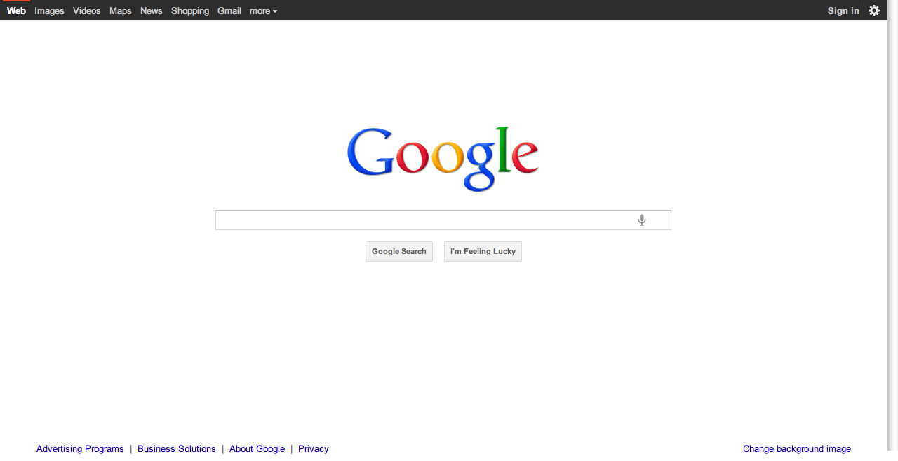
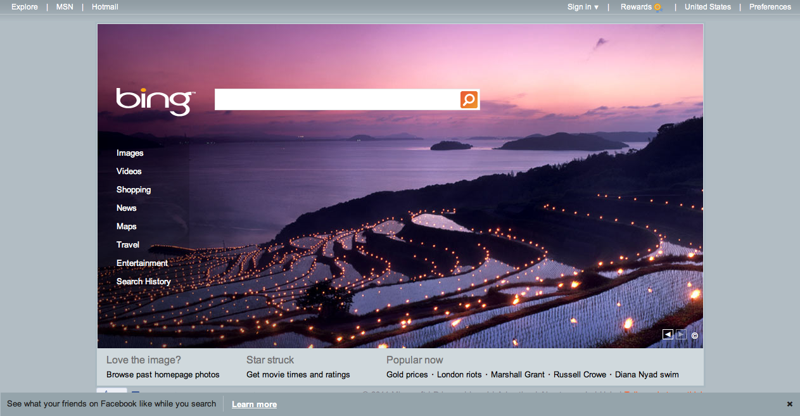
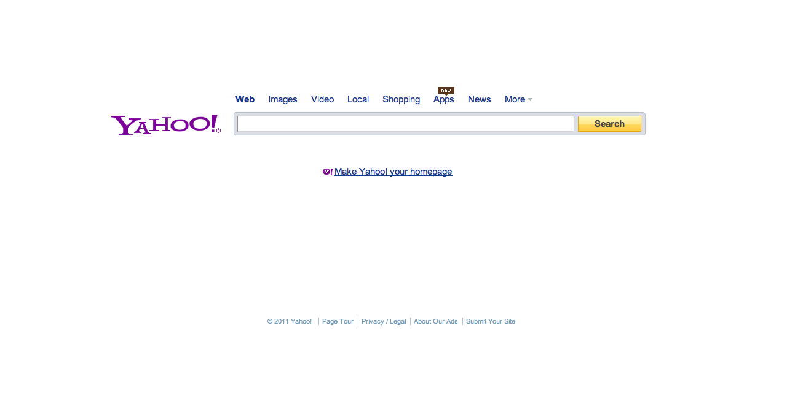
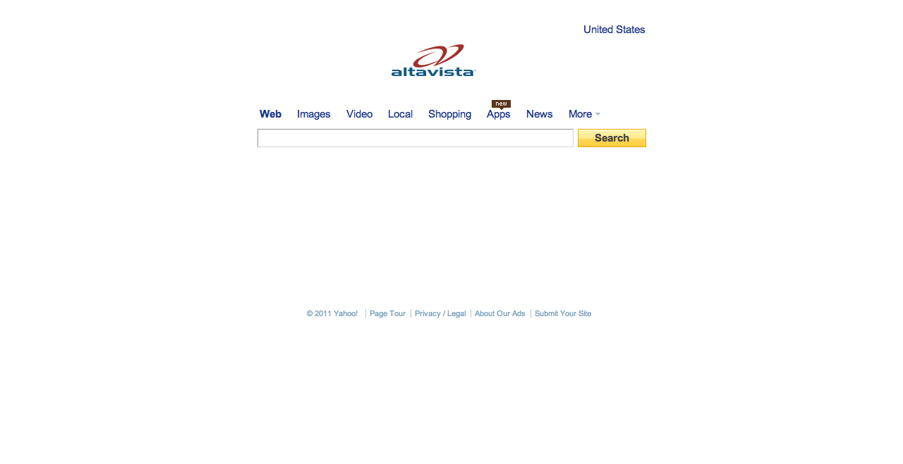
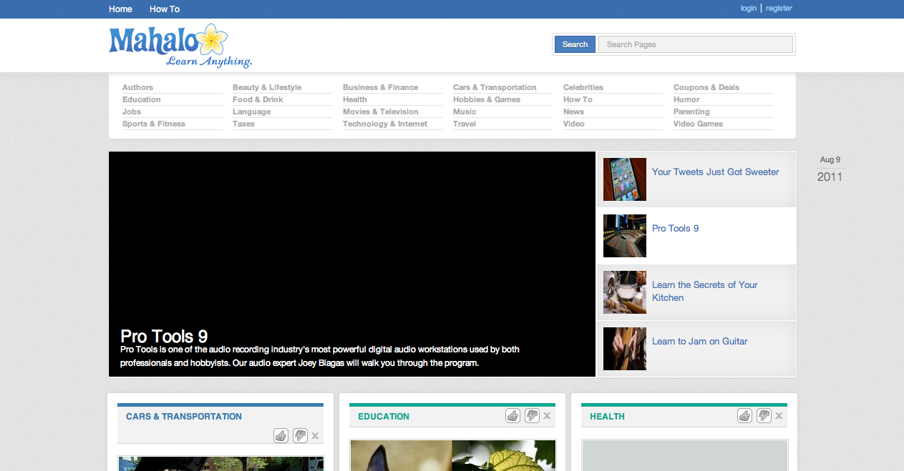
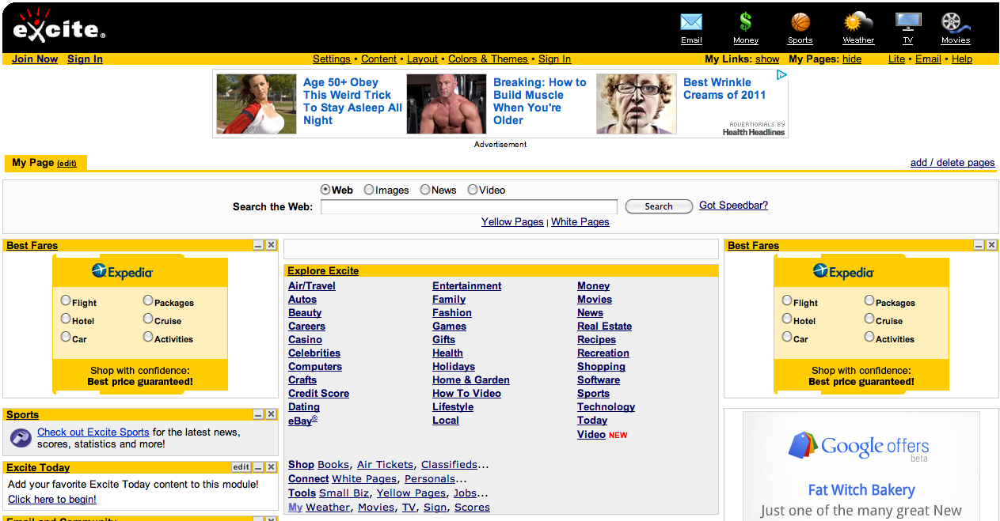

-

Google
Google Search or Google Web Search is a web search engine owned by Google Inc. and is the most-used search engine on the Web. Google receives several hundred million queries each day through its various services. The main purpose of Google Search is to hunt for text in webpages, as opposed to other data, such as with Google Image Search. Google Search was originally developed by Larry Page and Sergey Brin in 1997.
Google Search provides at least 22 special features beyond the original word-search capability. These include synonyms, weather forecasts, time zones, stock quotes, maps, earthquake data, movie showtimes, airports, home listings, and sports scores. (See below: Special features). There are special features for numbers, including ranges (70..73), prices, temperatures, money/unit conversions ("10.5 cm in inches"), calculations ("3*4+sqrt(6)-pi/2"), package tracking, patents, area codes, and language translation of displayed pages.
-

Bing
Bing (formerly Live Search, Windows Live Search, and MSN Search) is a web search engine (advertised as a "decision engine") from Microsoft. Bing was unveiled by Microsoft CEO Steve Ballmer on May 28, 2009 at the All Things Digital conference in San Diego. It went fully online on June 3, 2009, with a preview version released on June 1, 2009.
Notable changes include the listing of search suggestions as queries are entered and a list of related searches (called "Explore pane") based on semantic technology from Powerset that Microsoft purchased in 2008.
On July 29, 2009, Microsoft and Yahoo! announced a deal in which Bing would power Yahoo! Search. All Yahoo! Search global customers and partners are expected to have made the transition by early 2012.
-

Yahoo!
Yahoo! Search is a web search engine, owned by Yahoo! Inc. and was as of December 2009, the 2nd largest search engine on the web by query volume, at 6.42%, after its competitor Google at 85.35% and before Baidu at 3.67%, according to Net Applications.
Originally, Yahoo! Search started as a web directory of other websites, organized in a hierarchy, as opposed to a searchable index of pages. In the late 1990s, Yahoo! evolved into a full-fledged portal with a search interface and, by 2007, a limited version of selection-based search.
-

Altavista
AltaVista was created by researchers at Digital Equipment Corporation's Western Research Laboratory who were trying to provide services to make finding files on the public network easier. Although there is some dispute about who was responsible for the original idea, two key participants were Louis Monier, who wrote the crawler, and Michael Burrows, who wrote the indexer. The name AltaVista was chosen in relation to the surroundings of their company at Palo Alto. AltaVista was publicly launched as an internet search engine on 15 December 1995 at altavista.digital.com.
-

Mahalo
Mahalo.com is a web directory (or human search engine) and Internet-based knowledge exchange (question and answer site) launched in alpha test in May 2007 by Jason Calacanis. It differentiates itself from algorithmic search engines like Google and Ask.com, as well as other directory sites like DMOZ and Yahoo! by tracking and building hand-crafted result sets for many of the currently popular search terms. Mahalo means "thank you" in Hawaiian.
-

Exite
Excite (spelled and stylized as excite) is a collection of Internet sites and services owned by IAC Search & Media, which is a subsidiary of InterActive Corporation (IAC). Launched in 1994, it is an online service offering a variety of content, including an Internet portal, a search engine, a web-based email, instant messaging, stock quotes, and a customizable user homepage. The content is collated from over 100 different sources. In the 1990s, it was one of the most recognized brands on the Internet.